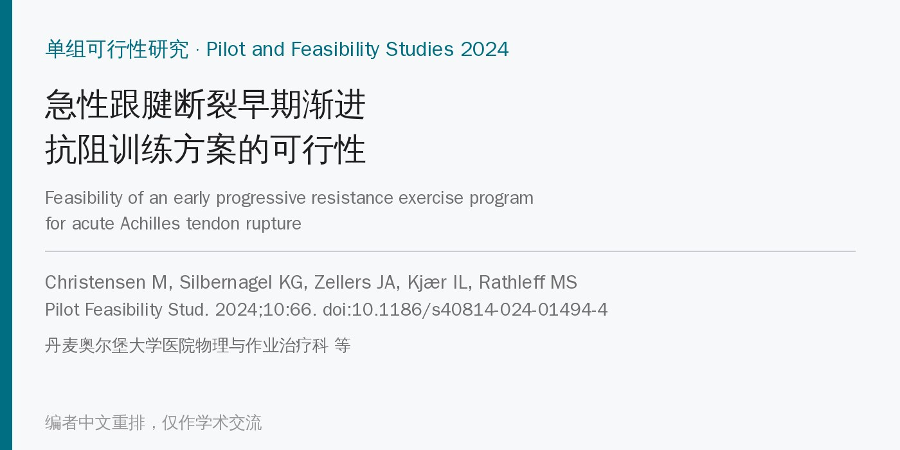
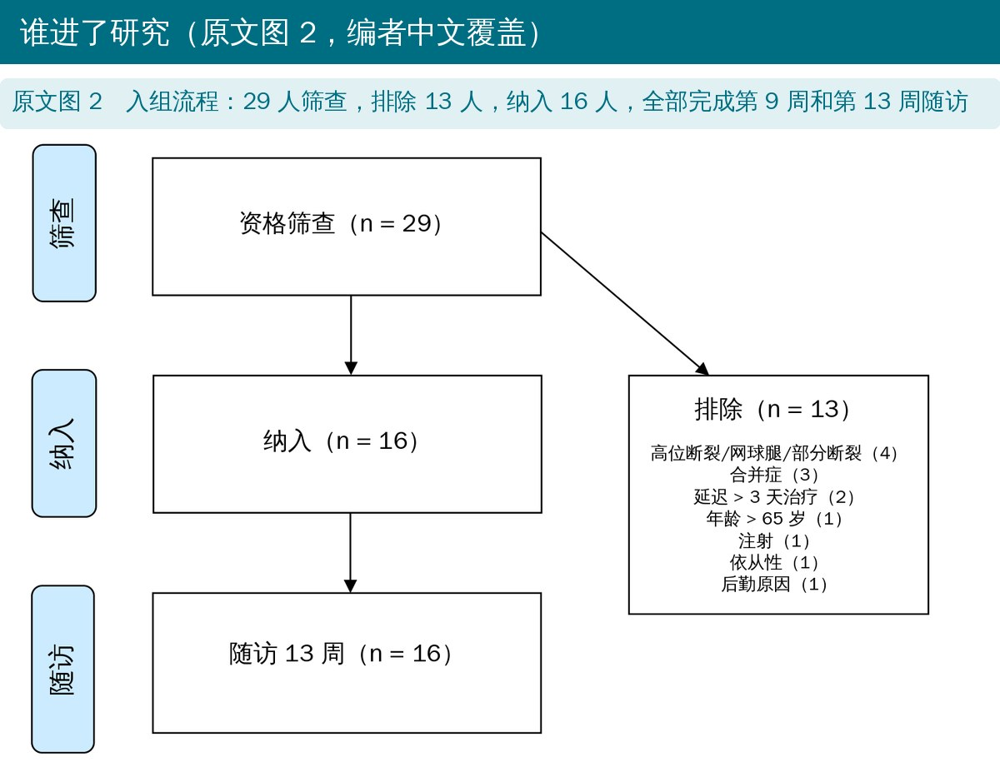
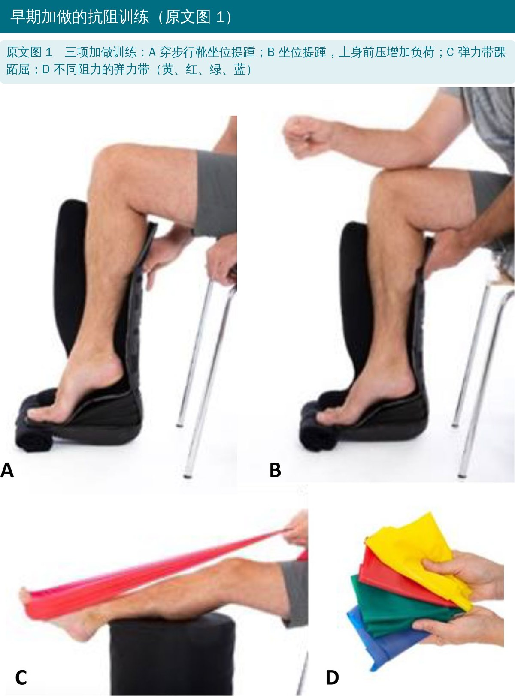
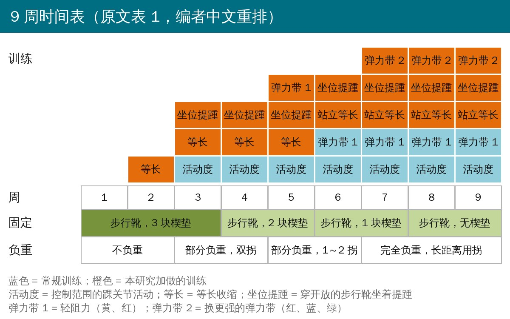
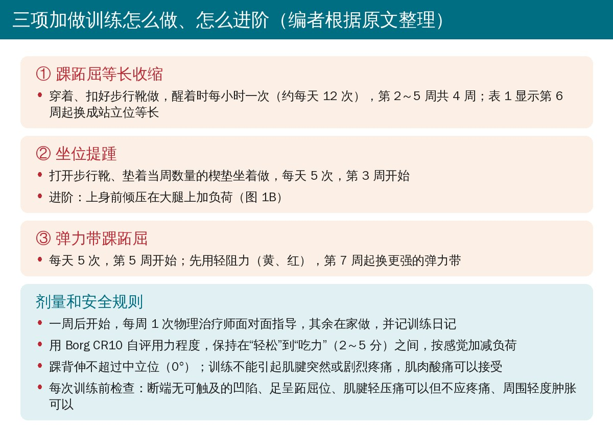
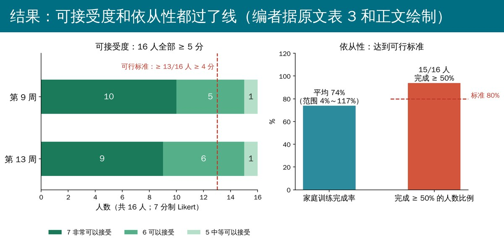
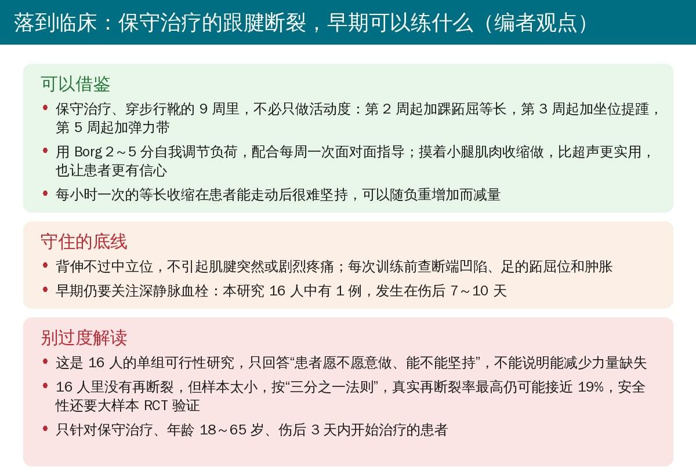

🔖原文信息（编者中文重排）
📚 文献信息
▪ Christensen M, Silbernagel KG, Zellers JA, Kjær IL, Rathleff MS. Feasibility of an early progressive resistance exercise program for acute Achilles tendon rupture. Pilot Feasibility Stud. 2024;10:66. doi:10.1186/s40814-024-01494-4
▪ 中文题目：急性跟腱断裂早期渐进抗阻训练方案的可行性
▪ 作者来自丹麦奥尔堡大学医院、奥尔堡大学，以及美国特拉华大学和华盛顿大学圣路易斯医学院
▪ 文章类型：单组干预性可行性研究（前瞻性注册 NCT04121377）
• 急性跟腱断裂后，小腿力量和功能缺失可持续到伤后 10 年，影响蹬地、工作、运动和生活质量
• 现行做法是前 8 周的早期功能康复，不论手术与否都推荐；动物研究和部分临床研究提示早期加载有利于肌腱愈合
• 作者此前的系统综述发现：早期功能康复方案五花八门，训练细节和进阶标准大多没写清，而且几乎都只做踝关节活动，没有真正给跟腱加载的抗阻训练
• 研究目的：在保守治疗的急性跟腱断裂患者中，检验一套早期渐进抗阻训练是否可行，即患者能否接受、能否坚持
• 2019 年 10 月至 2020 年 1 月，奥尔堡大学医院骨科门诊；18～65 岁、保守治疗的急性跟腱完全断裂，伤后 3 天内开始治疗
• 排除：跟骨止点处断裂、肌腱-肌腹交界处的高位断裂、既往跟腱断裂、近 6 个月用过氟喹诺酮或皮质激素、糖尿病、ASA ≥ 3 等
• 没有做正式样本量计算，按可行性研究的惯例纳入 16 人

🔖原文图 2（英文由编者译成中文覆盖）
• 方案由系统综述结果、患者座谈和物理治疗师、骨科医生、风湿科医生讨论共同制定，按 TIDieR 和 CERT 规范描述
• 常规方案包括控制范围的踝关节活动和全下肢训练；在此基础上加做三项抗阻训练，开始得更早、负荷更高
• 9 周穿步行靴，楔垫逐步撤除，负重从不负重逐步过渡到完全负重；同一名有经验的物理治疗师负责全部指导、监测和随访

🔖原文图 1（照片内只有分图字母，图注由编者翻译）

🔖原文表 1（编者按原表配色重排成中文）

🔖编者根据原文整理
• 可接受度：16 人中至少 13 人（80%）在 7 分制 Likert 量表上评 ≥ 4 分（“说不上”到“非常可以接受”）
• 依从性：至少 13 人完成 ≥ 50% 的家庭训练（按训练日记统计到第 9 周末）
• 同时监测肌腱愈合和不良事件；第 9、13 周随访；次要结局包括 ATRS、IPAQ、恐动量表、跟腱静息角、超声测肌腱长度和横截面积、坐位提踵耐力、能否单腿提踵
• 如果可接受度和依从性达不到标准，就不再开展正式的随机对照试验
• 29 人筛查，纳入 16 人，全部完成第 9 周和第 13 周随访；平均 46 岁，男 13 人、女 3 人，75% 为运动中受伤，伤前 ATRS 98 分
• 可接受度：第 9 周和第 13 周，16 人全部评 ≥ 5 分；评 7 分（非常可以接受）的分别为 10 人和 9 人。每周训练课中只有 2 次评分低于标准（第 1 次和第 5 次课各 1 人）
• 依从性：平均完成规定家庭训练量的 74%（4%～117%），15/16 人完成 ≥ 50%；最常没做够的是每小时一次的等长收缩；1 人因不敢独自练而几乎没在家做
• 安全性：没有再断裂或不愈合；1 例深静脉血栓（伤后 7～10 天）；3 人拄拐时摔倒但无损伤；3 人在撤掉第二块楔垫后行走短暂疼痛；10 人需要额外的消肿指导
• 原计划用超声确认小腿三头肌收缩，但坐位提踵时足很难维持在跖屈位，改为手摸肌肉，效果好，也增加了患者信心；肌耐力测试因设备故障缺了 9 人的数据

🔖编者据原文表 3 和正文绘制
• 设定可接受度的门槛时，更看重“没人觉得不能接受”，而不是追求高分；在肌腱刚开始愈合的阶段，有些不安是预料之中的，但 9 次训练课中只有 2 次略低于门槛
• 74% 的完成率在训练量很大、一般依从性普遍很低的背景下可以接受；完成率差异很大，说明除了宣教和指导，还有其他因素影响能否把训练融入日常
• 1 例深静脉血栓更可能与制动有关，而不是早期训练；早期训练反而有助于循环
• 结论：这套早期渐进抗阻训练可行，下一步应做随机对照试验检验疗效
• 只回答了“可行”：单组、无对照，不能说明它比常规方案更能减少力量缺失、改善功能
• 安全性证据很弱：16 人无再断裂令人鼓舞，但样本太小；按“三分之一法则”，0/16 意味着真实再断裂率的 95% 置信上限约为 19%
• 依从性可能被高估：训练日记是自报的，容易多报（有人达到 117%）；每周都由同一位研究者面对面关注，也可能推高依从性和可接受度
• 同一个人干预、评估、随访，没有盲法，可接受度评分可能偏向正面
• 次要结局没在正文报告：只放在附加文件 5 里，正文看不到肌腱长度、静息角和功能的数据；肌耐力还缺了 9 人
• 人群有限：只针对保守治疗、伤后 3 天内开始治疗的 18～65 岁患者，以男性和运动损伤为主；手术后的患者不能直接套用
• 训练剂量写在附加文件里：正文没有给出每项训练的组数和次数，临床复制需要去看附加文件 3、4
• 报告规范和设计不匹配：作者说按 CONSORT 2010 的“随机化预试验和可行性试验”扩展版报告，但本研究是单组、未随机
• 说好的统计量没给：统计方法说可接受度用中位数和四分位数呈现、会报告“从开始治疗到开始训练的平均天数和范围”，结果里都没有，表 3 只有人数
• 开始时间说法不一：正文说“诊断一周后开始干预”，表 1 第 1 周没有训练、等长收缩从第 2 周开始、坐位提踵从第 3 周开始
• “9/16 人评 7 分”与表 3 不完全对应：摘要说第 9 周和第 13 周时“9/16 评 7 分”，表 3 是第 9 周 10 人、第 13 周 9 人
• 弹力带 1 的颜色前后不一：表 1 中弹力带 1 在第 5 周标为橙色（加做训练），第 6 周起标为蓝色（常规训练）；“站立等长”在正文三项训练里也没有出现
• 排除原因里有“依从性（1）”：在筛查阶段就以依从性为由排除，原文没有解释

🔖编者观点
• 保守治疗不等于只等着：穿步行靴期间可以分阶段加入踝跖屈等长、坐位提踵和弹力带抗阻，患者大多能接受
• 用感觉管负荷：Borg 2～5 分、不引起肌腱突然或剧烈疼痛、背伸不过中立位，并在每次训练前检查断端和肿胀
• 每周见一面很关键：患者自己说，有物理治疗师在场才愿意做进阶训练；独自在家不敢练的人需要更多保障
• 别把可行当有效：能否真正减少长期力量缺失、是否安全，还要等随机对照试验
表 2 基线特征（n = 16）
| 项目 | 数值 |
|---|---|
| 年龄（岁） | 46（12） |
| 左 / 右 | 7 / 9 |
| 男性，n（%） | 13（81） |
| 身高（cm） | 181（7） |
| 体重（kg） | 83（12） |
| BMI | 25（3） |
| ATRS（伤前） | 98（8） |
| IPAQ（伤前），MET-分钟/周 | 3246（736；4207.5） |
| IPAQ 分级（低 / 中 / 高） | 5 / 3 / 8 |
| TSK（伤前） | 41（7） |
| 运动中受伤，n（%） | 12（75） |
| 刚恢复运动不久，n（%） | 5（31） |
注：数据为人数（%）、均值（标准差）或中位数（四分位距）。ATRS = 跟腱完全断裂评分；IPAQ = 国际体力活动问卷；TSK = Tampa 恐动量表。
表 3 训练可接受度的 7 分制评分（人数）
| 可接受度 | 第 9 周 | 第 13 周 |
|---|---|---|
| 7 非常可以接受 | 10 | 9 |
| 6 可以接受 | 5 | 6 |
| 5 中等可以接受 | 1 | 1 |
| 4 说不上 | ||
| 3 中等不可接受 | ||
| 2 不可接受 | ||
| 1 非常不可接受 |
注：原文表 1 已在正文中以中文时间表呈现。
欢迎关注骨科康复小黄公众号，获取更多物理治疗的专业知识！
📄参考文献：
Christensen M, Silbernagel KG, Zellers JA, Kjær IL, Rathleff MS. Feasibility of an early progressive resistance exercise program for acute Achilles tendon rupture. Pilot Feasibility Stud. 2024;10:66. doi:10.1186/s40814-024-01494-4
本文为中文解读，仅作学术交流：照片引自原文图 1，原文图 2 流程图中的英文由编者译成中文覆盖原位置，时间表、训练卡、结果图和临床卡为编者根据原文整理，表格为编者翻译。原文以 CC BY 4.0 许可发表，版权归原作者所有。